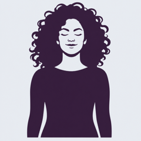
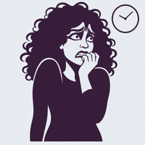
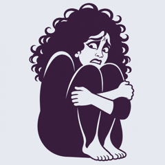
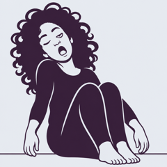
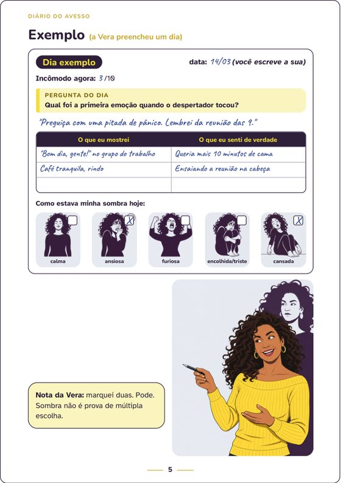
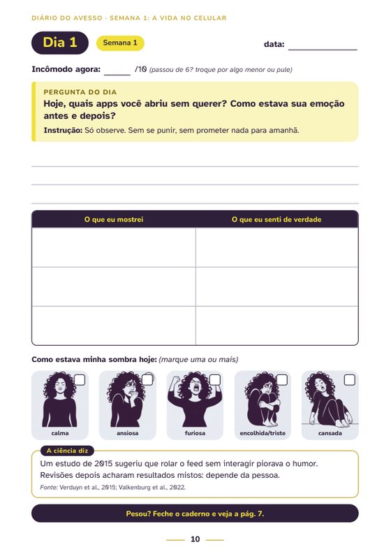
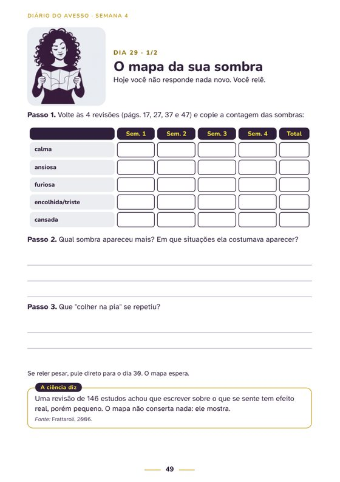

Diário do Avesso
30 dias para ver o que você sente por dentro.
Do canal Do Avesso, psicologia do cotidiano no YouTube.
Você diz "tudo bem". A sua sombra discorda.
Oi, eu sou a Vera. Por fora eu sorrio, respondo "imagina, não foi nada" e mando o emoji de joinha. Por dentro, às vezes, tem cansaço, raiva engolida, uma vergonha que volta às 3 da manhã. A minha sombra mostra tudo isso. Ela é péssima em fingir.
Este diário é para olhar o seu avesso por alguns minutos por dia, sem julgamento, sem nota e sem meta de virar outra pessoa.
Quero o meu diário Baixar a amostra grátisVocê se reconhece?
- vive dizendo "tudo bem" e quer reparar no que fica por baixo;
- pega o celular sem saber por quê, repassa conversas à noite, engole a raiva ou diz sim querendo dizer não;
- gosta de entender o próprio jeito com curiosidade, e não com cobrança;
- tem de 2 a 5 minutos por dia.
O que vem dentro
Um PDF de 60 páginas, em duas versões: A5 para imprimir (frente e verso, vira um caderninho) e para preencher no celular ou tablet, com campos de texto.
- 30 perguntas do dia, curtas e concretas;
- a tabela "o que eu mostrei / o que eu senti de verdade";
- as 5 sombras da Vera para marcar como foi o seu dia;
- um "a ciência diz" curtinho em cada dia, com a fonte;
- 4 revisões semanais;
- o mapa da sua sombra (retrato, não diagnóstico);
- uma carta da Vera para fechar;
- uma caixa de ferramentas numa página só;
- QR codes para os vídeos do canal;
- uma página em branco para imprimir de novo.







Como funciona
2 a 5 minutos por dia. Mais que isso não precisa.
- Escolha uma hora boa: de dia ou no começo da noite, longe da cama.
- Responda a pergunta do dia sobre algo pequeno: uma mensagem, uma irritação, um mico leve.
- Preencha o "por fora / por dentro" e marque a sua sombra.
- Leia o "a ciência diz" e pronto.
Pulou um dia? Três? Uma semana? Volta quando der. As datas vêm em branco, então dá para começar em qualquer época.
As 4 semanas
A ciência por trás
Cada exercício vem de uma ideia estudada em psicologia, numa versão curta e simples:
- Dar nome ao que sente. Pesquisas indicam que colocar em palavras o que se sente pode diminuir um pouco a reação do momento (Lieberman e colegas, 2007).
- Escrever sobre o que se sente. Estudada desde os anos 1980 (Pennebaker); o efeito encontrado é pequeno e vem de um formato mais longo que o deste diário.
- Falar de si pelo próprio nome. Pensar "a Vera está preocupada" dá um pouco de distância, como quando a gente aconselha uma amiga (Kross e colegas, 2014).
- Planos "se… então…". Decidir antes o que fazer numa situação que se repete ajuda muita gente a cumprir o que quer (Gollwitzer e Sheeran, 2006).
- Uma frase gentil para si. Programas de autocompaixão têm bons resultados em estudos; aqui é uma versão bem menor.
A parte honesta: nenhum estudo testou este diário. Ele não trata e não faz diagnóstico. Ele te dá alguns minutos por dia para reparar no seu avesso. Todas as fontes estão no fim do PDF.
Amostra grátis
Quer ver antes? A amostra tem 9 páginas: a capa, o "antes de começar", o "como usar", as 5 sombras, a página "quando parar" e os 3 primeiros dias. Baixa, imprime ou preenche no celular e vê se combina com você.
Antes de comprar: para quem não é
- procura tratamento: isso aqui é um espelho, não um terapeuta;
- está passando por uma crise agora: o melhor caminho é conversar com alguém (contatos no rodapé);
- quer escrever sobre traumas ou perdas graves: o diário trabalha com coisas pequenas, de propósito;
- espera uma fórmula de "30 dias para mudar de vida".
Quanto custa
R$ 19,90
Preço especial de lançamento. Mais para frente, o diário passa a custar R$ 27.
- Diário completo, 60 páginas, nas 2 versões (imprimir e celular)
- Pagamento único, sem assinatura
- Chega na hora no seu e-mail (Pix ou cartão)
- Imprima quantas vezes quiser, para uso pessoal
- Garantia de 7 dias: não gostou, pede o dinheiro de volta, sem explicar
Perguntas frequentes
Como eu recebo?
Logo depois da confirmação do pagamento, chega um e-mail com o link do PDF. Se não aparecer em alguns minutos, olhe o spam e a aba "Promoções". Ainda nada? Mande uma mensagem no Instagram @doavessopsicologia.
É para imprimir ou para usar no celular?
Os dois. Vem a versão A5 para imprimir e a versão com campos para preencher no celular ou tablet (em apps como GoodNotes ou Xodo). Pode imprimir quantas vezes quiser, para uso pessoal.
Posso pular dias?
Pode, e deve quando precisar. Pular faz parte. As datas vêm em branco.
Quanto tempo leva por dia?
De 2 a 5 minutos.
O diário substitui terapia?
Não. É uma ferramenta de autoconhecimento e não substitui psicoterapia nem atendimento de saúde. Se você sente que precisa de ajuda, procurar alguém vem antes de qualquer diário.
Posso dar de presente?
Pode: é só fazer a compra com o e-mail da pessoa. O PDF é para uso pessoal.
Um recado da Vera
A minha sombra continua aqui, fazendo careta quando eu digo "tudo bem". A sua também vai continuar. Ainda bem: ela é a parte que não mente. Se quiser olhar para ela comigo por 30 dias, o diário está aqui.
Ferramenta de autoconhecimento; não substitui psicoterapia. Para maiores de 18 anos.